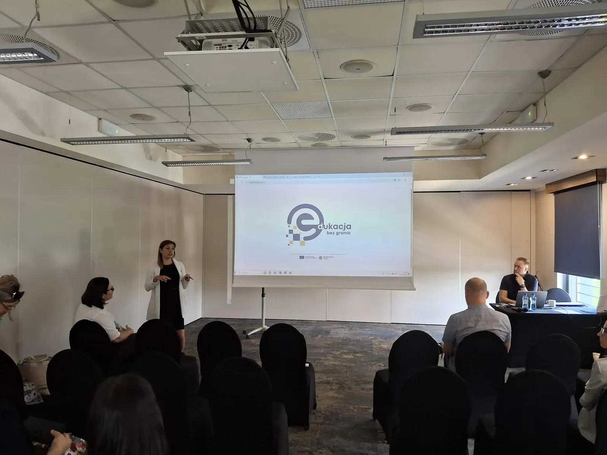
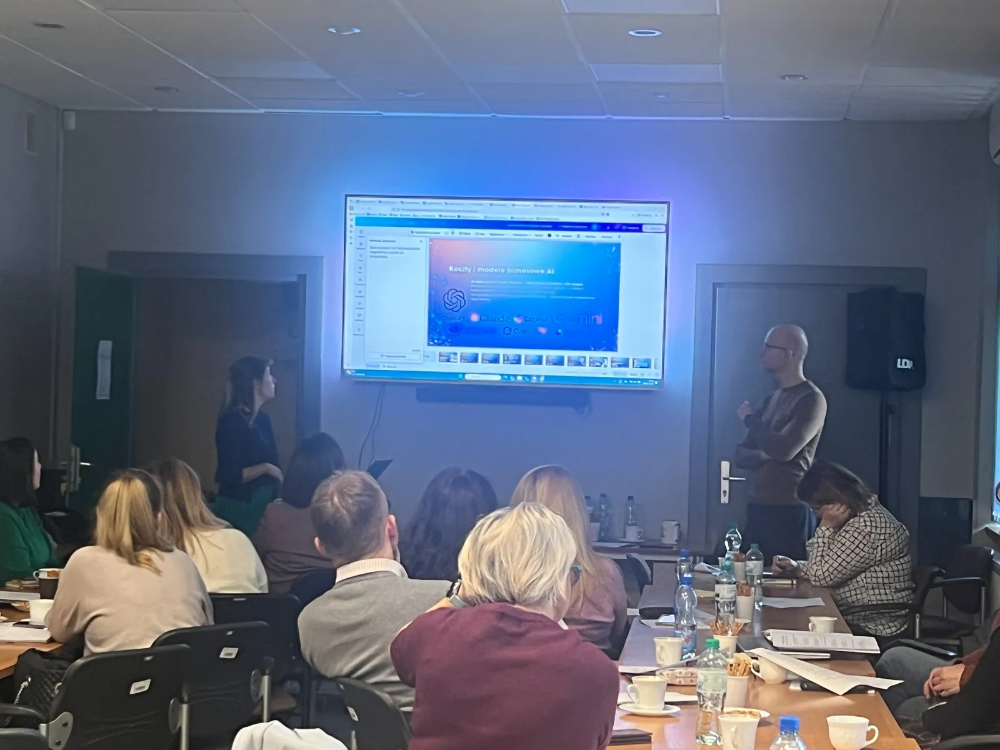
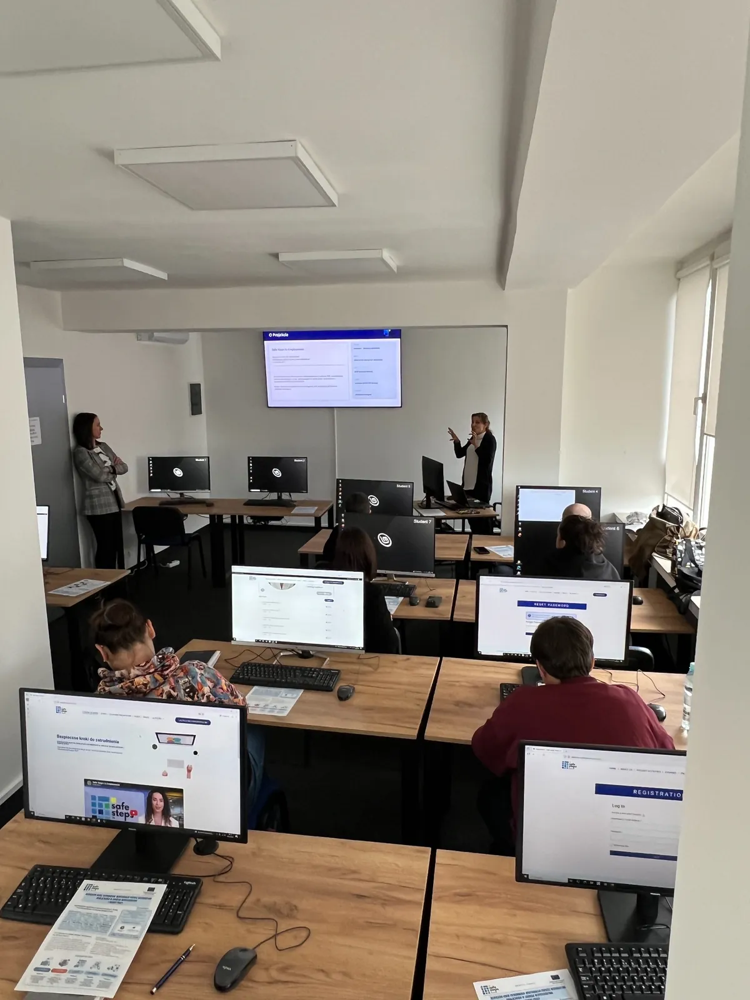
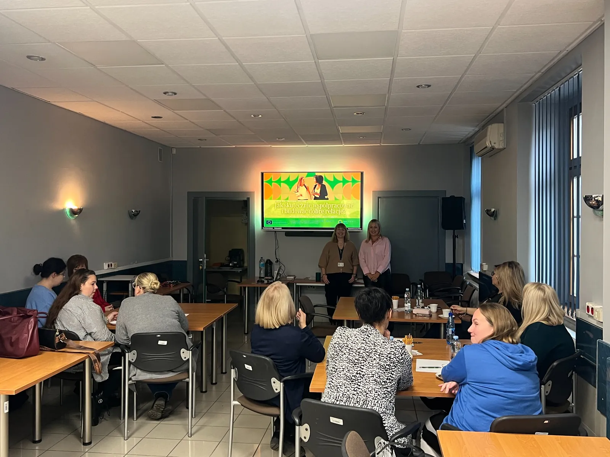

Sprawdzone działania Wojewódzkiego Urzędu Pracy w Katowicach
Szkolenia, za którymi stoją doświadczenie i realna praktyka
Szkolenie ma zmieniać sposób działania — samo zapełnienie kalendarza niczego nie rozwiązuje. Prowadzimy bezpłatne zajęcia dla pracowników publicznych służb zatrudnienia, instytucji, organizacji i osób dorosłych. Łączymy doświadczenie zespołu, potrzeby uczestników i rezultaty projektów Erasmus+, aby po zajęciach można było od razu wykorzystać poznane metody.
Sprawdzone doświadczenie
Nie zaczynamy od teorii. Programy wyrastają z przeprowadzonych szkoleń i pracy z różnymi środowiskami.
Prowadziliśmy zajęcia dla pracowników Wojewódzkiego Urzędu Pracy, powiatowych urzędów pracy, samorządów, instytucji i organizacji. Pracujemy z zespołami wewnętrznymi oraz grupami zewnętrznymi.
Najpierw rozpoznajemy potrzeby grupy. Następnie łączymy je z doświadczeniami z projektów Erasmus+ i informacjami zwrotnymi z wcześniejszych zajęć. Po każdej edycji aktualizujemy materiały i dopasowujemy przykłady do pracy uczestników.
Dla kogo
Szkolenia dopasowane do środowiska i zadań uczestników
Publiczne służby zatrudnienia
Pracownicy WUP i PUP, doradcy, pośrednicy pracy, kadra kierownicza i zespoły projektowe.
Instytucje publiczne i samorząd
Jednostki samorządu terytorialnego oraz instytucje realizujące zadania społeczne, edukacyjne i rozwojowe.
Organizacje i zespoły
Podmioty, które chcą rozwijać kompetencje cyfrowe, komunikacyjne, społeczne i edukacyjne swoich pracowników.
Osoby dorosłe
Uczestnicy rozwijający kompetencje potrzebne w pracy, uczeniu się i świadomym funkcjonowaniu w środowisku cyfrowym.
Zakres tematyczny
Kompetencje potrzebne dziś i w przyszłości
Rozwijamy ofertę etapami, reagując na problemy zgłaszane przez pracowników i instytucje. Każdy temat łączy wiedzę z zadaniem, przykładem lub narzędziem do użycia w pracy.
Sztuczna inteligencja
Bezpieczne i praktyczne wykorzystanie narzędzi AI w pracy, edukacji i przygotowywaniu materiałów.
Media literacy i fake news
Krytyczne myślenie, rozpoznawanie manipulacji, fact-checking, deepfake i ocena źródeł.
Cyberbezpieczeństwo
Rozpoznawanie zagrożeń, ochrona danych i bezpieczne zachowania w środowisku cyfrowym.
SEL i kompetencje społeczne
Samoświadomość, relacje, regulacja emocji i budowanie bezpiecznego środowiska współpracy.
Komunikacja i wystąpienia publiczne
Struktura wypowiedzi, praca z głosem, storytelling i świadome reagowanie na napięcie.
Gamifikacja i game-based learning
Projektowanie angażujących szkoleń, ćwiczeń i aktywnych metod uczenia się dorosłych.
Mindfulness
Uważność, zarządzanie napięciem i wzmacnianie dobrostanu w pracy zawodowej.
Kompetencje 4C
Krytyczne myślenie, komunikacja, współpraca i kreatywność w rozwiązywaniu problemów.
Jak pracujemy
Prezentacja to początek. Szkolenie kończy się konkretnym działaniem
Rozpoznajemy potrzeby
Pytamy o zadania grupy, jej doświadczenia i sytuacje z codziennej pracy. Na tej podstawie dobieramy zakres i przykłady.
Angażujemy uczestników
Uczestnicy rozwiązują zadania, analizują studia przypadków, dyskutują i pracują w grupach.
Dajemy gotowe materiały
Po zajęciach uczestnicy zachowują materiały i narzędzia, z których mogą korzystać w swojej pracy.
Oceniamy i doskonalimy
Sprawdzamy wyniki testów, analizujemy ankiety i czytamy uwagi uczestników. Na tej podstawie poprawiamy kolejne edycje.
Szkolenia w praktyce
Praca z grupą, ćwiczenia i wymiana doświadczeń




Co uczestnicy doceniają
Przygotowanie, praktyczne przykłady i możliwość zastosowania wiedzy od razu
Jasne wyjaśnienia nawet w przypadku złożonych i nowych zagadnień.
Przydatne narzędzia możliwe do wykorzystania po zakończeniu zajęć.
Aktywną formę opartą na ćwiczeniach, przykładach i rozmowie.
Dostosowanie do grupy zamiast jednego, niezmiennego scenariusza.
Współpraca
Chcesz zorganizować szkolenie dla swojej instytucji lub zespołu?
Napisz lub zadzwoń. Porozmawiamy o potrzebach grupy, zakresie szkolenia i możliwych terminach.